Set aside. A · Single continuous rail
Structurally dishonest: forces bench + surface load onto the extrusion.
[ LAB · AS DESIGNED ][ INVESTIGATION · AS EVIDENCED ] [+]
A retrofit kit that turns one wall of a compact hotel room into a single adaptive system: a continuous spine carries position, light and cable; two hard anchors take the load. Six named modes, two physical families.
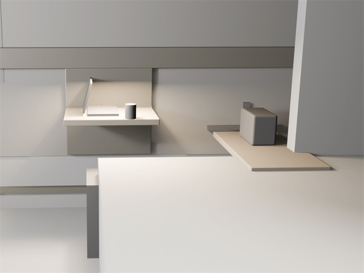
1One continuous anodised-aluminium spine · moves / routes → spineDesigned
2Fold-down surface ≈450 mm projection · 720–750 mm AFFLSpecified intent · targets, not built
3Luggage bench 80–120 kg static · floor-supported + wall tieSpecified intent
4Six modes → two physical familiesDesigned
130 kg at 450 mm ≈ 132 Nm into the anchor — spine bypassedDesigned · hand calculation, not tested
2Over-centre positive lock + swappable damper cartridgeSpecified intent
310,000 cycles ≈ 5 yr at ~5 cycles / daySpecified intent · design target, not achieved
4Anchor strategy must be verified per wall conditionTBC
Specified intent. No prototype or physical mock-up exists. Loads, cycles and moments are targets or hand calculations, not test results.
02 · Question
Compact premium hotel rooms are asked to host arrival, work, dining, rest and wellness in one footprint. Their furniture is fixed in layout but loose in objects, so every housekeeping reset becomes a judgement call. Working from a real built room as a private reference, the project mapped where the room loses flexibility: the free long wall already carried a desk, a chair, a round table and an armchair, while luggage landed on the bed or in the entry pinch. The question became whether one wall could hold all of those states — and return every module to a single home line that staff can read at a glance.
03 · Mechanism
Pick a mode: it snaps to its physical family, the wall crossfades, and the surface folds about its pivot. At 90° the lock seats and the load runs to the wall — never through the spine.
6named modes2physical families
Family 01 Surface open
Family 02 Surface closed
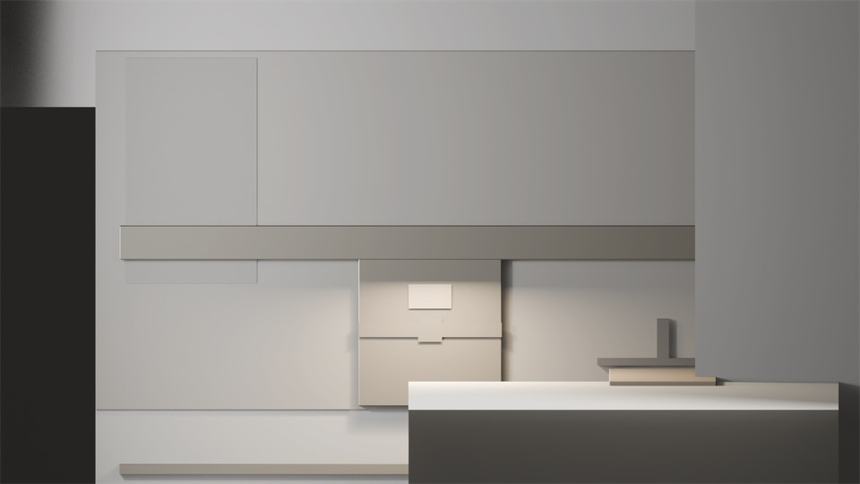
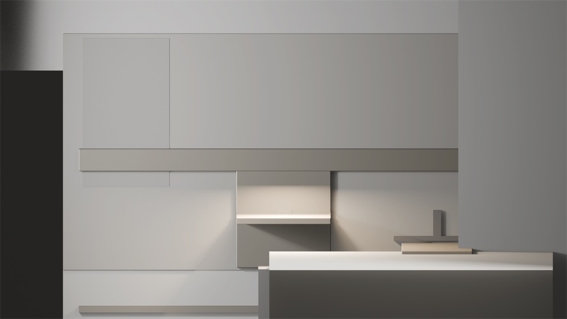
Mode 02 · Work → family 01 · surface open · lock seated at 720–750 mm AFFL
Light preset · 3500–4000 K task light over the surface Specified intent
Fold angle, lock height and load path are the specified-intent targets of the STEP-05 mechanism study — not built, not tested. Intermediate angles are illustrative. ≈132 Nm is a hand calculation (30 kg at 450 mm reach), not a measurement; a leaning user adds more.
04 · Inside
VisibleHidden / serviceLoad path · anchorCable · low loadPivot · mediumDatumTarget
[ 04.1 · Mode × module matrix ]
Six modes × five modules, each cell primary, support or parked · from the STEP-01 matrix, 26–27 Jun 2026 · Designed
| Mode | Transform railIs the spine | Fold-down surfaceHigh load | Luggage dock / benchHigh load | Lighting spineLow load | Privacy / wellness panelMedium load |
|---|---|---|---|---|---|
| 01 Arrival / luggage | PrimaryStages bench + panel at entry; carries night-path light. Backbone is the first thing engaged. | ParkedFolded flat against rail. | PrimaryReceives suitcase off the floor immediately. | SupportLow warm wayfinding / entry glow. | SupportSlid to screen luggage zone from bed sightline. |
| 02 Work | PrimaryPositions surface at desk height; routes power + cable. | PrimaryDeployed as the work surface — the defining mechanism of this mode. | ParkedHolds bag; doubles as seat-adjacent stash. | PrimaryShifts to 3500–4000 K task light over surface. | SupportRotated as video-call backdrop / acoustic baffle. |
| 03 Rest | SupportHolds modules in retracted state; carries night light. | ParkedFolded; clears floor + sightlines. | ParkedStatic; bag stowed, not in path. | PrimaryDrops to 2700 K low ambient + floor night path. | SupportPositioned for blackout / privacy at window or door. |
| 04 Dining / coffee | PrimaryRe-positions same surface to dining height / zone. | PrimaryDeployed (same surface, different position) for tray / coffee. | ParkedOptional seat for casual dining. | SupportMid-warm pooled light over surface. | ParkedNot engaged. |
| 05 Wellness / stretching | PrimaryClears the zone — retracts surface, parks bench — to open floor. | ParkedFolded fully out of swept volume. | ParkedPushed to wall to free floor. | SupportEven diffuse calm light, no glare from floor. | PrimaryBecomes the wellness corner — visual + acoustic enclosure. |
| 06 Housekeeping reset | PrimaryReturns all modules to a single defined home state — the reset reference. | SupportFolds to flush home position; wipe-down clear. | PrimaryBench cleared + reset; defines the “room is ready” baseline. | SupportBright neutral cleaning light, then reset to default. | SupportReturned to home anchor; fabric sleeve inspected. |
| Primary · of 6 | 5/6support 1/6 | 2/6support 1/6 | 2/6support 0/6 | 2/6support 4/6 | 1/6support 4/6 |
The transform rail is primary in 5 of 6 modes and support in the sixth — “it is the system, not a module”. STEP-06 later gives the bench a dining-seat role (support), pending mock-up ergonomics.
[ 04.2 · Rail section at an anchor node ]
Eight parts · redrawn from the STEP-02 rail architecture study · schematic, proportions indicative, not CAD
Division rule If a module moves or routes → spine. If it holds weight or takes a moment → anchor. The fold-down surface does both: it references the spine for position and transfers load to an anchor. Designed
[ 04.3 · Published plates 01–10 ]
The locked 10-frame portfolio set, shown whole and never re-titled · open any plate at full size
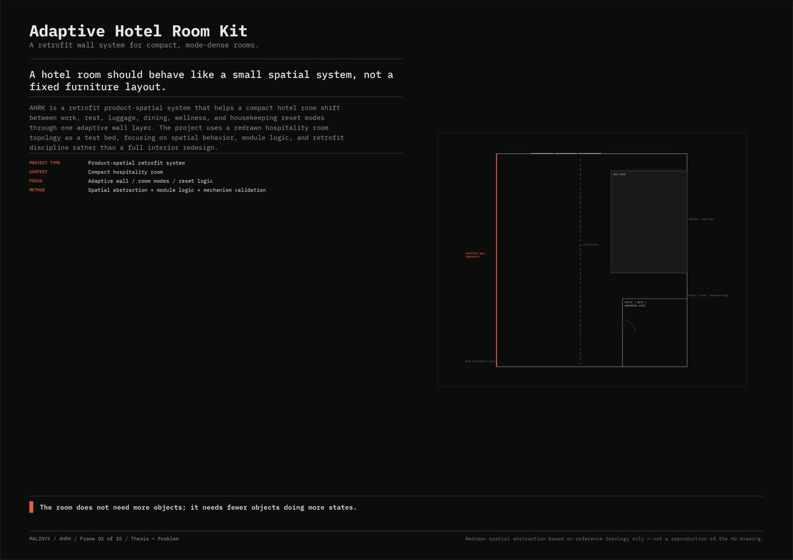
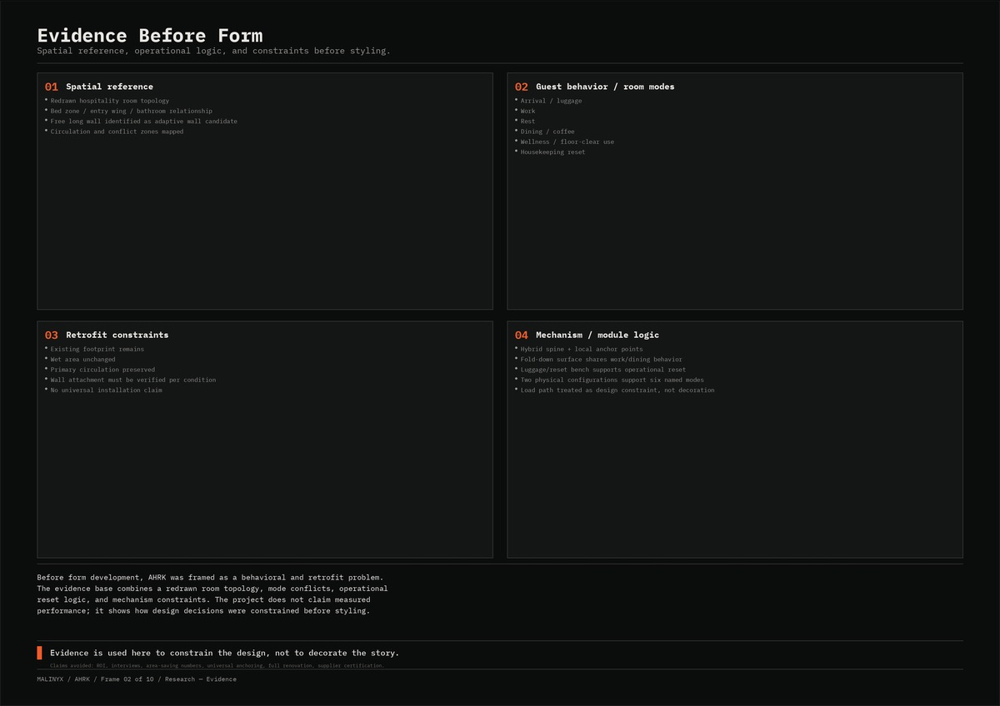
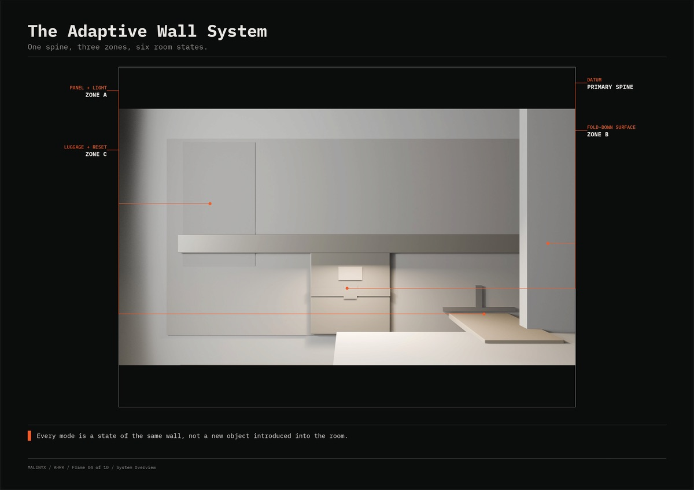
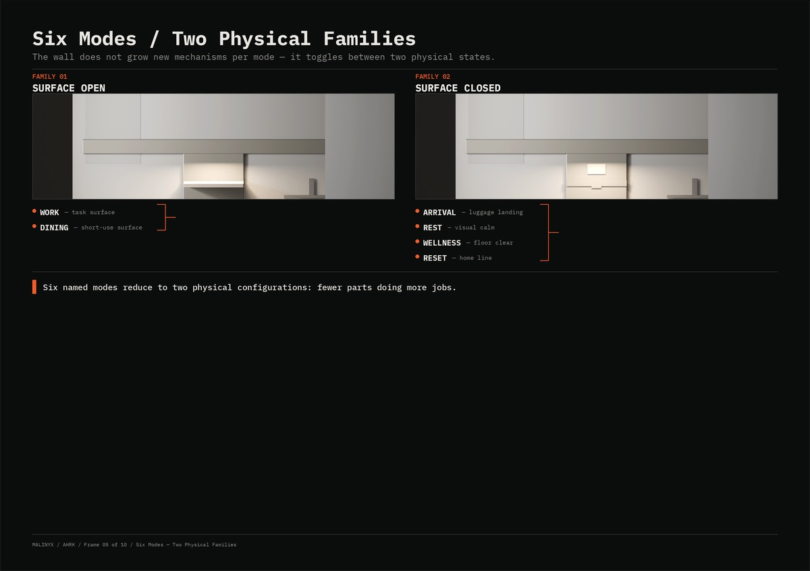
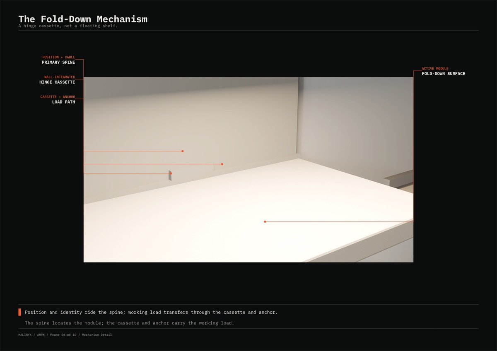
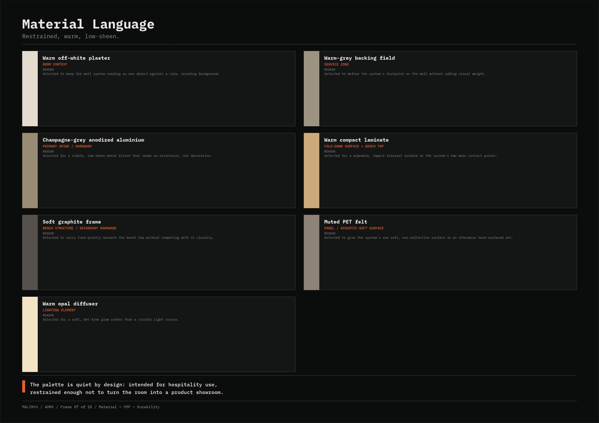
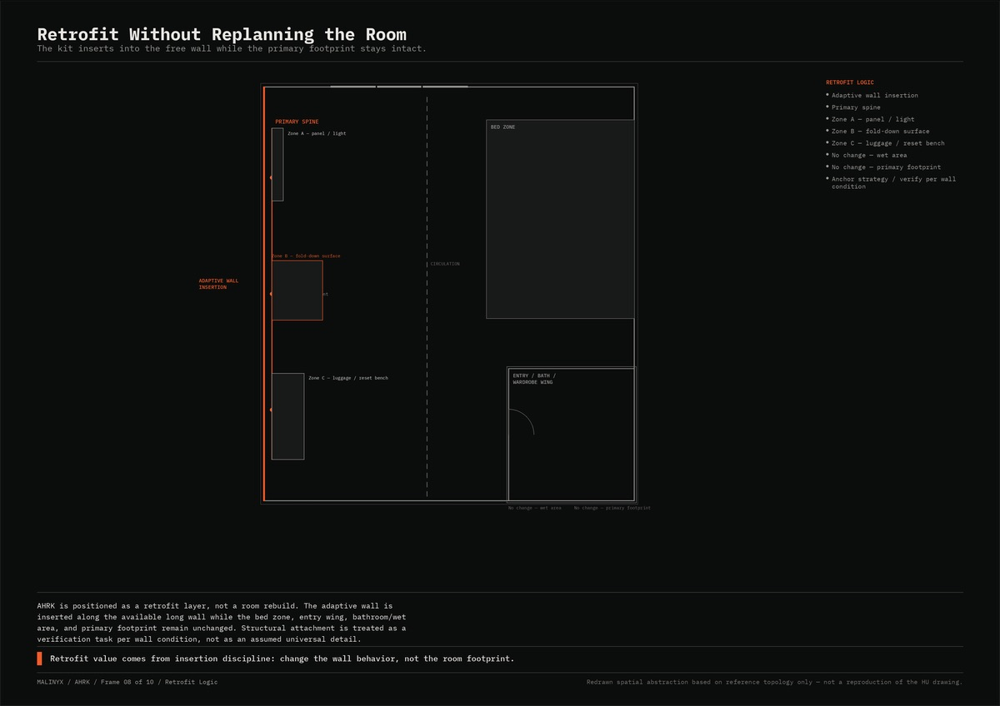
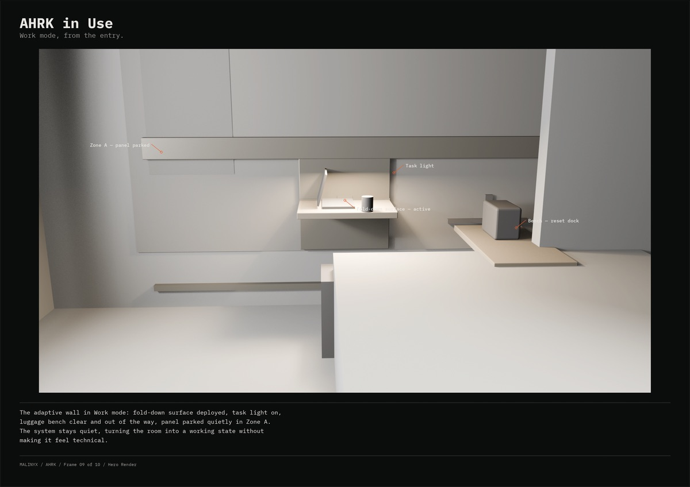
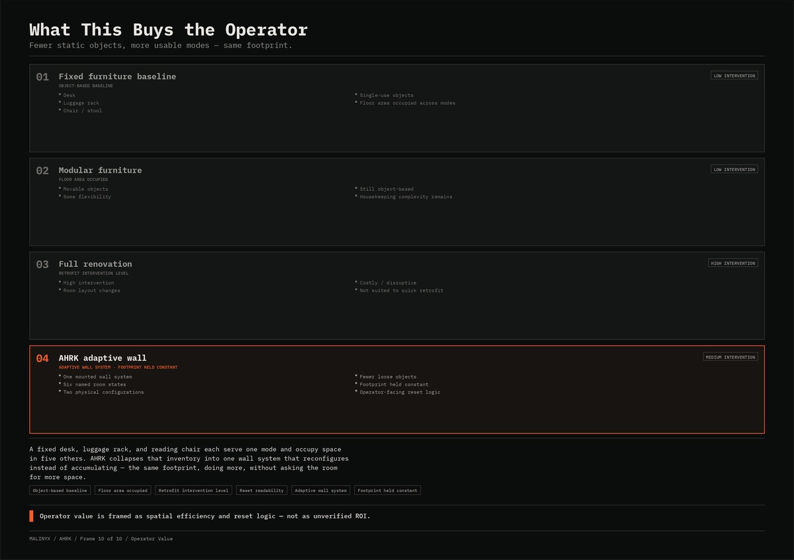
05 · Pigment & material
The engineering taxonomy is the colour system: every module takes the pigment of the load it carries. Point at a load class to find its modules on the wall.
Moves / routesspine
Holds weight · takes a momentanchor
Low load · steel-blue
#6B8AA3
Lighting head · charging node · tray · cable run — ride the spine
Authored · STEP-02 load hierarchy
Medium load · pivot ochre
#C9A24A
Privacy panel · coat hook · mirror — spine carrier + floor / anchor reaction
Authored · STEP-02
High load · anchor orange
#F25C2A
Fold-down surface (20–30 kg + lever arm) · bench (80–120 kg) — hard anchor required
Authored · STEP-02
18 mm ply backing
#5A8A6A
The anchor substrate behind the lining
Authored · STEP-05 section
[ Material language · plate 07 ]
Restrained, warm, low-sheen · seven materials as published · hexes ≈ sampled from the plate, not measured finishes
Working swatches · STEP-07, 27 Jun 2026
These differ from the locked plate 07: STEP-07 drew the base laminate matte dark; the published plate shows a warm compact laminate. The plate set is the later, locked record (9 Jul 2026).
Set aside · STEP-05 / 07
Not hospital, not IKEA-hack, not generic hotel. The single rule: low-sheen everything.
06 · Decisions
Rail architectureSTEP-02 · 26–27 Jun 2026
Fold-down mechanismSTEP-05
Luggage benchSTEP-06
Mode and module countSTEP-01
07 · Claim ledger
| Claim | Value | Level | Qualifier |
|---|---|---|---|
| Room modes | Six: 01 Arrival / luggage · 02 Work · 03 Rest · 04 Dining / coffee · 05 Wellness / stretching · 06 Housekeeping reset | Designed | STEP-01 matrix |
| Physical families | Two: surface open (Work, Dining) · surface closed (Arrival, Rest, Wellness, Reset) | Designed | Stated as the real geometry — not six mechanisms |
| Modules | Five: transform rail, fold-down surface, luggage dock / bench, lighting spine, privacy / wellness panel | Designed | No sixth module; gaps become rail accessories |
| Rail architecture | Option C hybrid: continuous anodised-aluminium spine at one datum height + local hard anchor nodes | Designed | A and B set aside (STEP-02) |
| Load classes | Low rides the spine · medium: spine carrier + floor / anchor reaction · high: hard anchor required | Specified intent | Division rule: moves / routes → spine; holds weight → anchor |
| Fold-down surface | ≈450 mm projection · 720–750 mm AFFL · width 700–900 (≈800) · closed 35–60 (target ≤45) · bracket spacing ≥200 · edge R6 · 20–30 kg distributed | Specified intent · targets, not built | STEP-05 dimensional targets |
| Overturning moment | 30 kg at 450 mm reach ≈ 132 Nm at the wall, resolved as a tension / compression couple into the anchor; spine bypassed | Designed · hand calculation, not tested | A leaning user adds more; lean-case load still to be defined |
| Mechanism | Concealed pivot bracket + damper stay + separate over-centre positive lock · soft-close both ways · damper as a swappable cartridge | Specified intent | Option B (STEP-05) |
| Cycle target | 10,000 cycles ≈ 5 yr at ~5 cycles / day | Specified intent · design target, not achieved | Never tested; no prototype exists |
| Luggage bench | Floor-supported + wall tie (tip / lateral only) · width ≈900 (800–1100) · depth 420–480 · height 460–480 · 80–120 kg static · ≥300 standoff from the entry pinch · ≥500 clear in front | Specified intent | Option A (STEP-06) |
| Object count | ~4 loose objects (desk, chair, round table, armchair) → 1 wall system + 1 tuck-under stool | Designed · countable | From the private reference room |
| Zones | A panel / light (window end) · B fold-down surface + anchor (mid) · C bench + anchor / floor (entry end) · nothing in the entry / bath pinch | Designed | Schematic; no room dimensions published |
| Lighting presets | Rest 2700 K + floor night path · Work 3500–4000 K task · Dining mid-warm pooled · Reset bright neutral, then default · diffuser CRI ≥90 target | Specified intent | Not modelled in the renders |
| Material base | Compact laminate + powder-coated steel + PET felt; veneer / carcass as premium variant · low-sheen everything | Specified intent · direction | STEP-07; renders show tonal blockout, not final CMF |
| Standards | Designed against the relevant standard families, to be verified at prototype | No compliance claimed | No certification of any kind |
| Physical evidence | None — no prototype, no physical mock-up | Not claimed | “Physical mock-up for the motion feel” deferred |
08 · Provenance, credits, revisions
Credits
Bahareh Arianejad — lead, industrial design & product-system logic · MALINYX Studio
Haleh Afshar — spatial design / interior architecture collaboration
Renders are blockout-level visualisations with tonal materials — not photographs, not final CMF, not built work. The room reference is private and is not reproduced here: no names, linework, sheet numbers or dimensions from any source drawing.
| Rev | Date | Change |
|---|---|---|
| A | 26–27 Jun 2026 | STEP-01…10 logic and feasibility documents: matrix, rail, overlay, mechanism, bench, CMF |
| B | 28 Jun 2026 | CAD-01 blockout brief |
| C | 2–8 Jul 2026 | Clay / blockout renders |
| D | 9 Jul 2026 | 10-frame portfolio set locked |
| E | 12 Jul 2026 | Website package and LinkedIn PDF |
| F | 2 Oct 2026 | This specimen sheet: section and rail redrawn with site inks; matrix rebuilt as a live table; plates shown whole |
09 · Next specimen
Specimen 04 / 08 · sheet 06
ECS
Carry that moves with the rider. Sheet 06 · prototype, cardboard-validated load path only.
Open sheet 06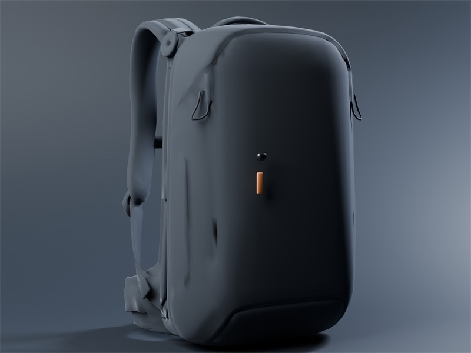